Creative Recipes to Reduce Food Waste
Vegetable Stir-Fry

Ingredients:
- Leftover vegetables
- Garlic
- Soy sauce
- Cooking oil
Steps:
- Chop all vegetables.
- Heat oil and sauté garlic.
- Add vegetables and stir-fry.
- Add soy sauce and serve.
Bread Pudding
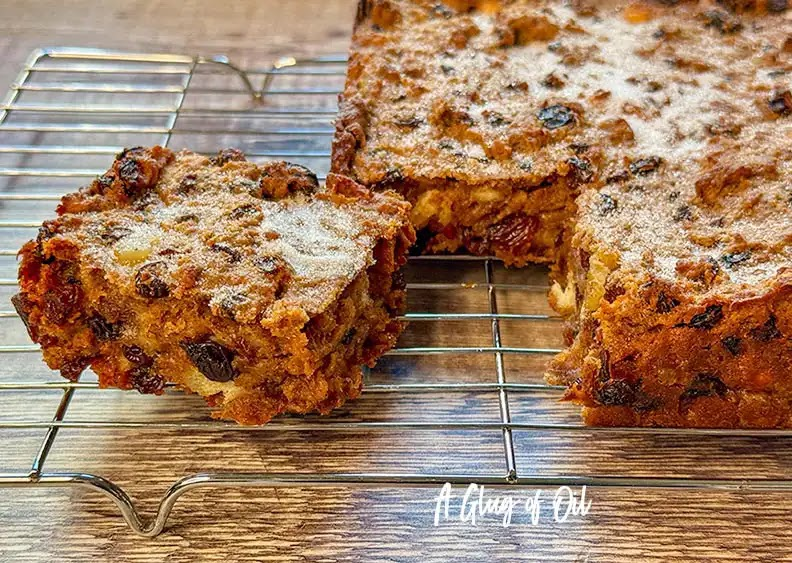
Ingredients:
- Stale bread
- Milk
- Eggs
- Sugar
Steps:
- Tear bread into pieces.
- Mix with milk, eggs, and sugar.
- Pour into baking dish.
- Bake until golden.
Smoothies

Ingredients:
- Overripe fruits
- Yogurt
- Milk or juice
Steps:
- Add all ingredients to blender.
- Blend until smooth.
- Serve chilled.
French Toast

Ingredients:
- Stale bread slices
- 2 eggs
- 1/2 cup milk
- Optional: sugar, cinnamon
Steps:
- Whisk eggs and milk (add sugar/cinnamon if desired).
- Dip bread slices into mixture.
- Fry on pan until golden brown.
Fried Rice

Ingredients:
- Leftover rice
- Mixed vegetables
- 2 eggs
- Soy sauce
Steps:
- Sauté vegetables in oil.
- Add leftover rice and mix.
- Scramble eggs and combine with rice. Season with soy sauce.
Mashed Potato Cakes

Ingredients:
- Leftover mashed potatoes
- 1/2 cup cheese
- 1 egg
- Butter for frying
Steps:
- Mix mashed potatoes, cheese, and egg into a dough.
- Shape into patties.
- Fry in butter until golden.
Vegetable Pasta Bake
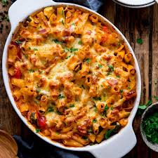
Ingredients:
- Leftover pasta
- Mixed vegetables
- Cheese for topping
- Tomato or cream sauce
Steps:
- Mix pasta, vegetables, and sauce.
- Transfer to baking dish and sprinkle cheese on top.
- Bake at 180°C for 20 minutes until golden.
Chicken Rice Soup
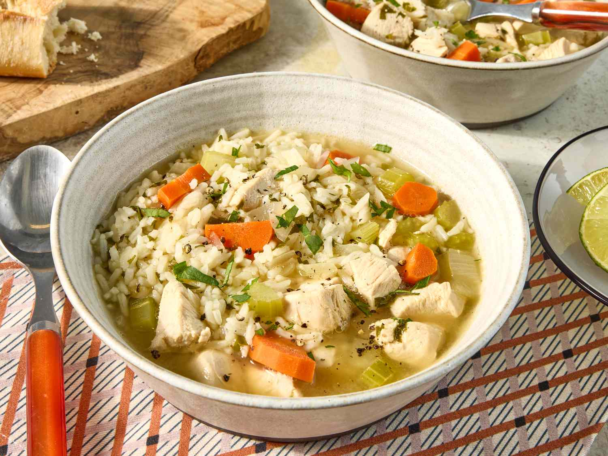
Ingredients:
- Leftover rice
- Leftover chicken
- Broth or water
- Egg (optional)
Steps:
- Boil broth and add shredded chicken.
- Add leftover rice and simmer 5 minutes.
- Optional: swirl in beaten egg for extra texture.
Breakfast Sandwich

Ingredients:
- Leftover bread slices
- Cheese
- Leftover ham or bacon
- Egg
Steps:
- Toast bread slices.
- Cook egg as desired and assemble sandwich with cheese and ham.
- Serve warm.
Vegetable Noodle Soup

Ingredients:
- Leftover vegetables
- Noodles
- Broth or water
- Soy sauce or seasoning
Steps:
- Boil broth and add vegetables.
- Add noodles and cook until tender.
- Season and serve hot.
Potato and Cheese Frittata
Ingredients:
- Leftover potatoes
- Eggs
- Cheese
- Onions or herbs
Steps:
- Mix eggs, diced potatoes, cheese, and onions.
- Pour mixture into a pan and cook on medium heat.
- Flip carefully and cook until firm and golden.
Bean and Rice Patties
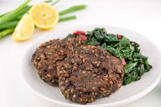
Ingredients:
- Leftover rice
- Leftover beans
- Tomato paste or diced tomato
- Spices
Steps:
- Mash beans and mix with rice and tomato.
- Shape into patties.
- Pan-fry until crisp.
Bruschetta

Ingredients:
- Stale bread slices
- Diced tomatoes
- Cheese or leftover pesto
- Fresh herbs
Steps:
- Toast bread slices.
- Top with tomatoes, cheese, and herbs.
- Serve as snack or appetizer.
Leftover Meat Wrap
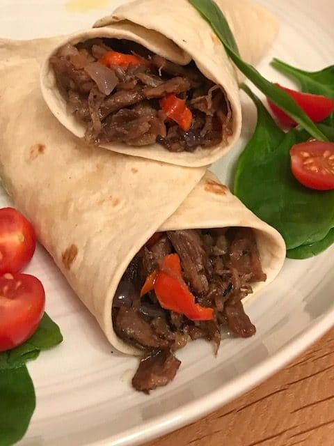
Ingredients:
- Leftover meat (chicken, beef, or pork)
- Vegetables
- Wraps or tortillas
- Sauce or dressing
Steps:
- Warm the wrap.
- Fill with meat, vegetables, and sauce.
- Roll tightly and serve.
Leftover Curry Rice Casserole
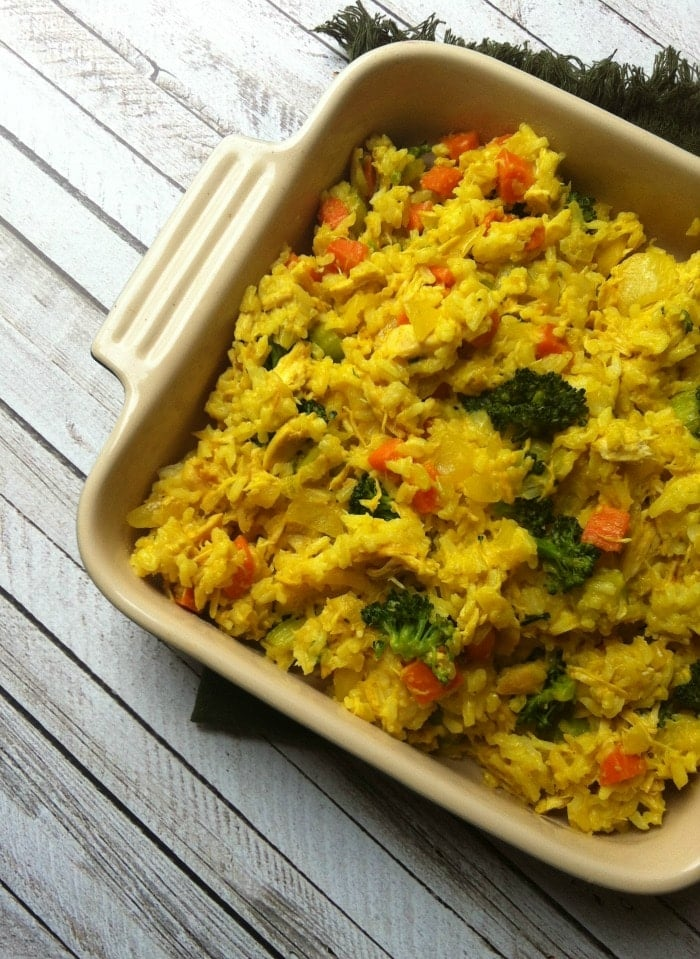
Ingredients:
- Leftover rice
- Leftover curry
- Mixed vegetables
- Cheese for topping
Steps:
- Mix leftover curry, rice, and vegetables.
- Place in baking dish, top with cheese.
- Bake at 180°C for 15-20 minutes.
Garlic Bread

Ingredients:
- Stale bread slices
- Garlic cloves
- Butter
- Herbs (parsley, oregano)
Steps:
- Mash garlic and mix with butter and herbs.
- Spread on bread slices.
- Bake or toast until golden.
Pasta Frittata
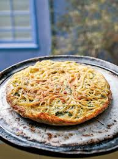
Ingredients:
- Leftover pasta
- Eggs
- Cheese
- Vegetables
Steps:
- Mix pasta, eggs, cheese, and vegetables.
- Pour into pan and cook on low heat until firm.
- Flip carefully and cook the other side.
Rice Pudding

Ingredients:
- Leftover rice
- Milk
- Sugar
- Cinnamon or nutmeg
Steps:
- Heat milk in a pot.
- Add rice and sugar, simmer until creamy.
- Sprinkle cinnamon and serve warm or chilled.
Leftover Hash Browns
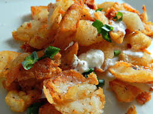
Ingredients:
- Leftover cooked potatoes
- Egg
- Cheese
- Optional: onions or herbs
Steps:
- Grate leftover potatoes and mix with egg and cheese.
- Form patties and fry until crispy.
- Serve hot.
Vegetable Quesadilla

Ingredients:
- Leftover vegetables
- Cheese
- Eggs (optional)
- Tortilla wraps
Steps:
- Place vegetables and cheese on tortilla.
- Fold and cook on pan until cheese melts.
- Slice and serve.
Chicken Fried Rice Balls
Ingredients:
- Leftover rice
- Shredded chicken
- Vegetables
- Optional: soy sauce
Steps:
- Mix rice, chicken, vegetables, and seasoning.
- Form into balls.
- Fry until golden or bake for a healthier option.
Stuffed Bread Rolls

Ingredients:
- Leftover bread slices
- Vegetables
- Cheese
- Spices/herbs
Steps:
- Flatten bread slices.
- Place vegetables and cheese, then roll tightly.
- Bake or pan-fry until golden.
Mexican Rice Wrap
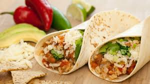
Ingredients:
- Leftover rice
- Beans
- Spices (chili powder, cumin)
- Herbs
Steps:
- Mix rice, beans, spices, and herbs.
- Place mixture on tortilla and wrap.
- Optional: grill for extra crispiness.
Cake Trifle
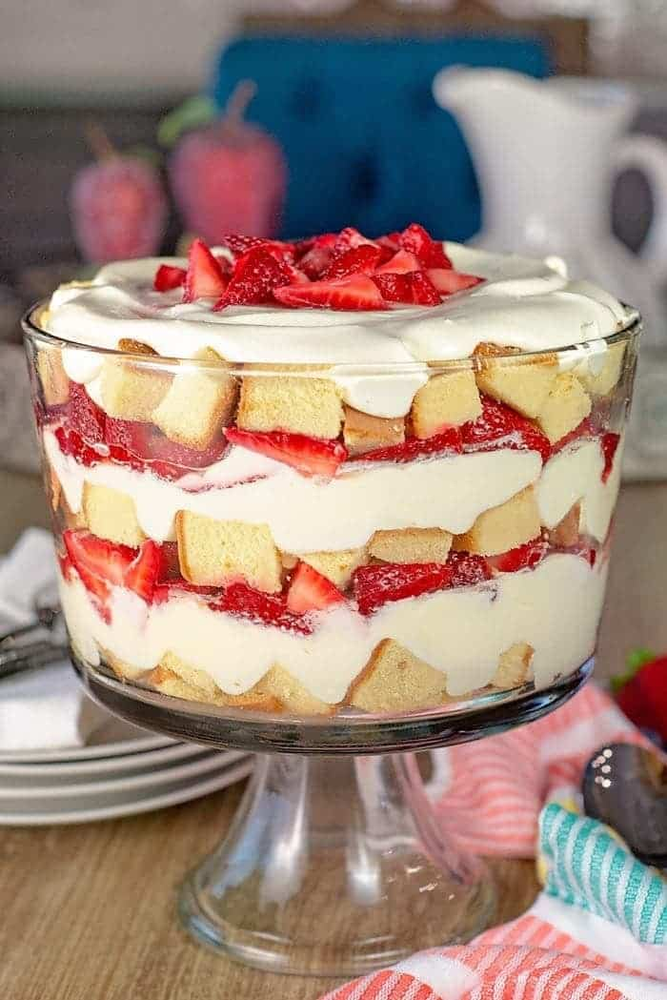
Ingredients:
- Leftover cake pieces
- Frosting or custard
- Fruits
Steps:
- Layer cake pieces, frosting, and fruits in a glass.
- Repeat layers.
- Chill and serve.
Curry Rice Muffins
Ingredients:
- Leftover rice
- Leftover curry
- Vegetables
- Cheese
Steps:
- Mix rice, curry, and vegetables.
- Fill muffin tins, top with cheese.
- Bake at 180°C for 15-20 minutes.
Vegetable Bread Omelette

Ingredients:
- Stale bread slices
- Eggs
- Leftover vegetables
- Cheese
Steps:
- Whisk eggs and add vegetables.
- Place mixture on bread slice and cook on pan.
- Top with cheese and serve.
Rice Stir-Fry
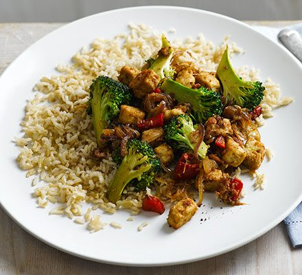
Ingredients:
- Leftover rice
- Vegetables
- Egg
- Soy sauce
Steps:
- Sauté vegetables in oil.
- Add rice and stir-fry.
- Push rice aside, scramble egg, then mix in.
- Season with soy sauce and serve.